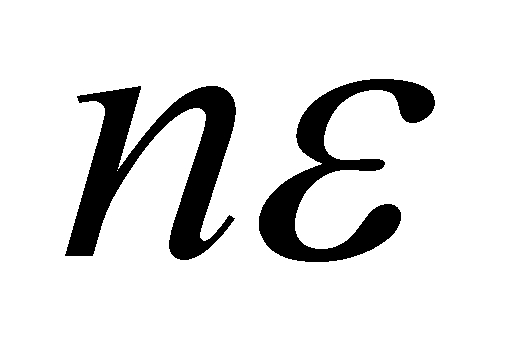

|
|
|
If a continuous domain of values
 of the variable x is considered to be, informationally
speaking, as non-decomposable, this means that inside it, there
are no known singular values except the internal reference
value. The non-existence of these internal values is equivalent with
the lack of information or with the existence of a non
determination. Therefore, the DP 1D elementary object is
equivalent with a single AAV (internal reference), where a non
determination interval
is being added. The fact that DP contains only a single known value
(just like the virtual point, only that the virtual point is not
related to the non determination interval any longer) was the reason
for choosing the name of dimensional point. The association
process to an AAV of a non determination interval is similar with
the approximation (truncation) of that AAV (which otherwise would
require an infinity of digits for its display), to a realizable
value, with a finite number of digits, the difference between them
being even that non determination interval. It is clear that this
operation was (tacitly) made by people even since the numbers were
discovered, but without respecting the definition of the real
numbers from the mathematics, and by nonchalantly ignoring the clear
difference between these virtual and common numbers.
of the variable x is considered to be, informationally
speaking, as non-decomposable, this means that inside it, there
are no known singular values except the internal reference
value. The non-existence of these internal values is equivalent with
the lack of information or with the existence of a non
determination. Therefore, the DP 1D elementary object is
equivalent with a single AAV (internal reference), where a non
determination interval
is being added. The fact that DP contains only a single known value
(just like the virtual point, only that the virtual point is not
related to the non determination interval any longer) was the reason
for choosing the name of dimensional point. The association
process to an AAV of a non determination interval is similar with
the approximation (truncation) of that AAV (which otherwise would
require an infinity of digits for its display), to a realizable
value, with a finite number of digits, the difference between them
being even that non determination interval. It is clear that this
operation was (tacitly) made by people even since the numbers were
discovered, but without respecting the definition of the real
numbers from the mathematics, and by nonchalantly ignoring the clear
difference between these virtual and common numbers.
Any interval of a domain which is major than DP may be synthesized through the adjacent concatenation (joining) of a finite number of DP, according to the following relation:
(X.3.6.4.1)
where the object one-dimensional interval is represented according to the mathematical syntax as an union of elementary object intervals DPi (demi-closed) in which:
(X.3.6.4.2)
It may come out that is also an object, with the boundaries x0 and xn, the internal reference x0 and the size of internal domain . If you have already read chapter 3, you will recognize in the object from the relation X.3.6.4.1 the external composition of the 1D DP-type objects.
An informed reader could say that,
so far, there is nothing new in this approach; the relation
X.3.6.4.1 is nothing else but a simple integration ranging from x0
to xn, in case that the point interval
 is replaced by the well-known infinitesimal interval dx from
the integral calculus. Indeed so, but the objectual approach on the
mathematics which was initiated in this work eliminates the logical
contradictions which existed so far and which were not included
within the textbooks. Such a contradiction is given by the assertion
“A curve is made-up from an ordered set (a series) of
concatenated points”. However, according to the classic
mathematics, the point’s size is zero and no matter how many
zero-dimensional elements would be concatenated, a zero-dimensional
result would be obtained anyway. On the other hand, the integral
calculus solves the problem correctly, in order to conceive a curve,
a series of curve elements being concatenated, but this time, the
curve’s elements have a certain dimension. However, one
little formality is still required: the recognition of the existence
of dimensioned points as realizable objects, and of the
virtual points (dimensionless points) as non-realizable
objects (virtual, asymptotic models of the realizable points).
is replaced by the well-known infinitesimal interval dx from
the integral calculus. Indeed so, but the objectual approach on the
mathematics which was initiated in this work eliminates the logical
contradictions which existed so far and which were not included
within the textbooks. Such a contradiction is given by the assertion
“A curve is made-up from an ordered set (a series) of
concatenated points”. However, according to the classic
mathematics, the point’s size is zero and no matter how many
zero-dimensional elements would be concatenated, a zero-dimensional
result would be obtained anyway. On the other hand, the integral
calculus solves the problem correctly, in order to conceive a curve,
a series of curve elements being concatenated, but this time, the
curve’s elements have a certain dimension. However, one
little formality is still required: the recognition of the existence
of dimensioned points as realizable objects, and of the
virtual points (dimensionless points) as non-realizable
objects (virtual, asymptotic models of the realizable points).
In case of 2D and 3D domains, with two or three dimensions, DP will also be either two- or three-dimensional. The model of this kind of objects is a synthetic object (complex one, but this time, by means of internal composition within the model) which consists of two or three one-dimensional objects which were above mentioned, associated with a common reference system - a virtual point which represents the two or three RAV with a simultaneous existence, each of them with its own non determination interval, the internal references of each associated one-dimensional interval.
DP model has been also adopted due to other reasons, namely because the continuity and consistency of the systemic organization of the geometrical objects is therefore achieved, which means that any finite realizable curve (or straight line) segment may be decomposed into a finite number of adjacent DP, any finite surface is decomposable into a finite number of adjacent curves (which are also decomposable), any finite volume is decomposable in adjacent areas etc. This systemic continuity is also required by the existing mathematic system (integral calculus, calculus with finite differences) which operates only with dimensioned elements (infinitesimal elements have the number of dimensions specific to the integration domain).
Copyright © 2006-2011 Aurel Rusu. All rights reserved.